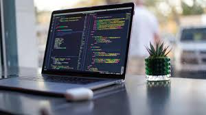

| Le développeur back-end a pour mission de concevoir tous les éléments techniques indispensables au fonctionnement d'un site web ou d'une application. Il doit donc avoir des connaissances approfondies en informatique telle la maitrise des langages de programmation comme Python, Ruby, PHP, Java… |  |